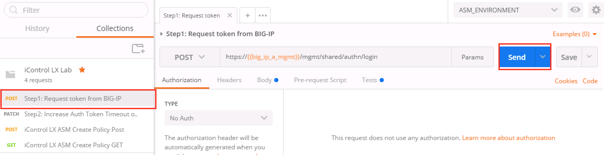
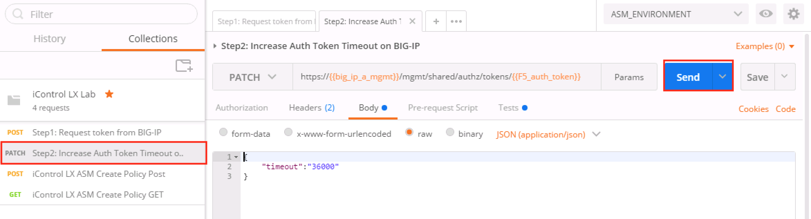
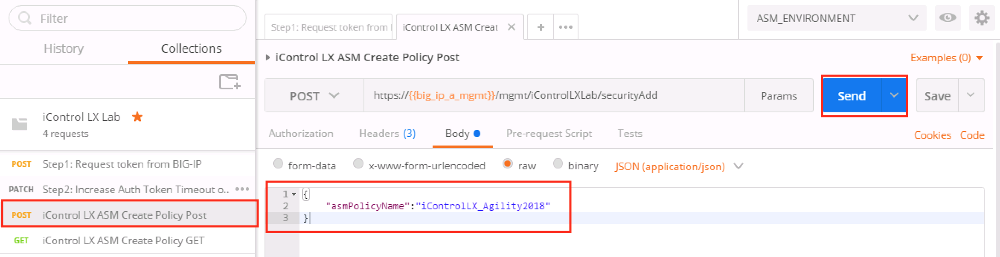
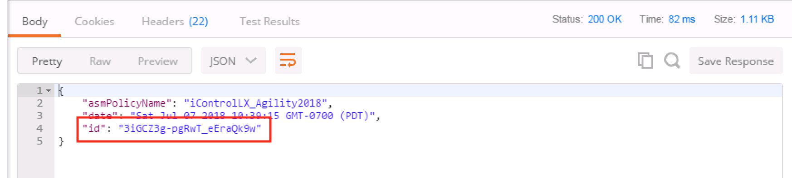
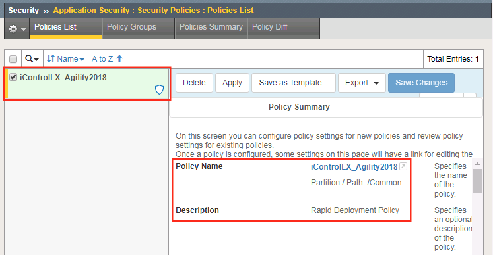

Lab 5.4 - Creating an ASM Policy by calling the iControl LX extension¶
In this lab we will use the Postman client to create an ASM policy in a single call to the BIG-IP.
Task 1 - Check BIG-IP for existing ASM policies¶
First lets take a look at the existing policies on the BIG-IP
In your web browser, navigate to BIG-IP:
https://10.1.10.20/Navigate to Main > Security > Application Security > Security Policies

As seen in the sceenshot above there are no existing policies on the BIG-IP.
Task 2 - Perform REST call using Postman to create policy¶
Now lets use Postman to create an ASM policy.
First we have to authenticate to the BIG-IP and obtain a token using Postman.
Select
Step1: Request token from BIG-IPfrom the collections tab, then selectSend.This will generate a token used to authenticate future REST calls from Postman.
Select
Step2: Increase token from BIG-IPfrom the collections tab, then selectSend. This will extend the token timeout to 36000 seconds.Select
iControl LX ASM Create Policy POSTfrom the collections tab, then selectSend. This will create an ASM polciy using the iControl LX RPM package uploaded earlier. Note the POST body contains only a name for the policy, in this case the name is “iControlLX_Agility2018”. This will be the name of the ASM policy that’s created on the BIG-IP.Note
It will take about 15-20 seconds to generate the policy after hitting the
Sendbutton in Postman. Wait this amount of time before proceeding with the following instructions.
{kind=link}
{kind=link}
{kind=link}
Task 3 - Verify ASM policy has been created¶
There are two different ways we will verify the ASM policy has been created. We will check using Postman and will also check via the GUI.
To check if the policy has been created using Postman. Select
iControl LX ASM Create Policy GETfrom the collections tab, then selectSend. Look for the fieldid:<unique_id>in the response. This will tell you the policy has been created.To check if the policy has been created using the GUI. In your web browser, navigate to BIG-IP:
https://10.1.10.20/. Then navigate to Main > Security > Application Security > Security Policies. You will see the newly created policy.Note
What have we accomplished?? We used Postman to create an ASM policy by only sending the name of the policy. The iControl LX Extension that we installed on the BIG-IP,
SecurityAdd-0.2-002.noarch.rpm, accepts the name of the policy then executes the rest of the requirments to build the policy. The policy is now ready to be associated with a Virtual Server.
{kind=link}
{kind=link}